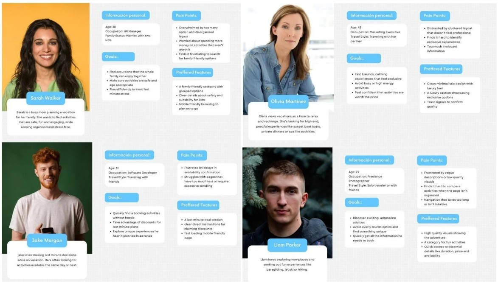
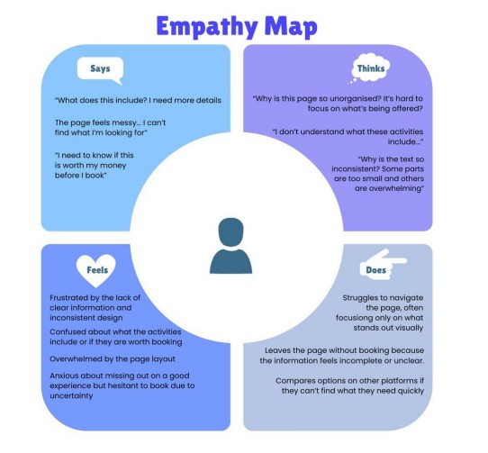
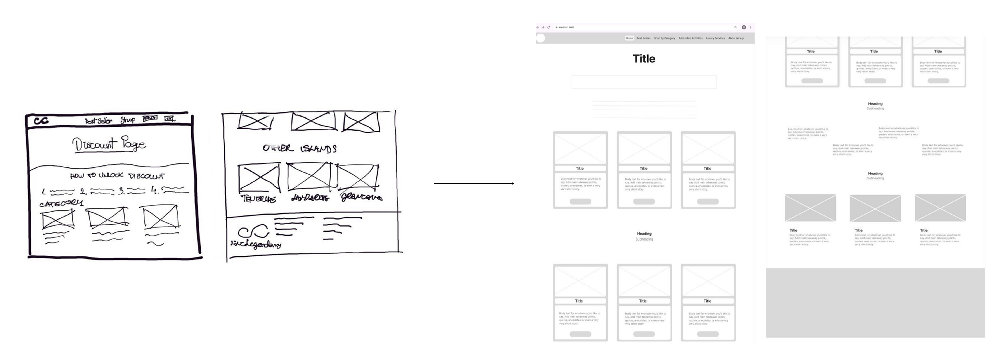
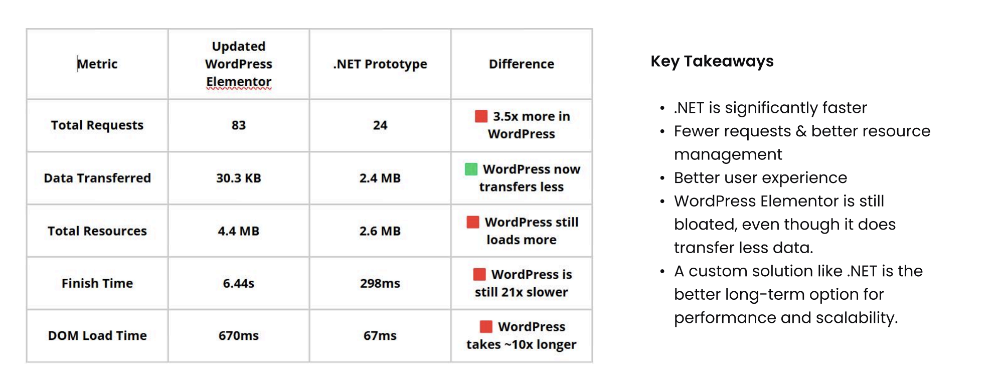

Club Canary
Upsell Page Redesign.
Optimizing a text-heavy post-booking flow to improve visual hierarchy, mobile usability, and buyer confidence for travelers adding extra excursions.

Reducing friction in the post-booking journey.
Club Canary's post-booking upsell page suffered from a cluttered layout and inconsistent information architecture, resulting in high drop-off rates and lost revenue opportunities.
My goal was to restructure the user journey and interface while navigating strict technical constraints, including legacy availability calendars for over 150 excursions, complex booking states, and strict page-load performance requirements.
Understanding user friction and business context.
I started with a comprehensive UX audit focused on visual hierarchy and responsive behavior. The audit revealed significant cognitive overload caused by unstructured text and missing critical data within the activity cards.
To validate these assumptions, I combined qualitative and quantitative research:
- Stakeholder Interviews: Discussions with leadership uncovered business goals to better target couples and families through clear pricing and specific imagery.
- User Surveys: Feedback from core demographics confirmed that confusing discount structures and a cluttered UI were the primary friction points blocking conversions.

Synthesizing this data into behavioral archetypes and an empathy map highlighted a clear pattern. Users felt anxious about missing out on good experiences, but they were too overwhelmed by the interface to proceed confidently with a booking.

Translating research into scalable logic.
Journey mapping made it clear that the page required explicit instructional copy, a logical component structure, clear iconography, and a highly visible discount mechanism.
I began by sketching layout concepts to define the structural hierarchy before moving into Figma to build high-fidelity components and scalable wireframes.

To manage stakeholder expectations and advocate for the user, I developed two distinct prototypes for testing:
- Concept A (User-Centric): A completely restructured UI focused purely on best UX practices and conversion optimization.
- Concept B (Business-Aligned): A more conservative iteration that strictly maintained the existing legacy visual language.

Validating usability and technical feasibility.
I conducted moderated A/B usability testing with 8 representative users via in-person and remote sessions. The data clearly validated the user-centric approach:
3 mins
Average task completion time for Concept A (compared to 4.5 mins for Concept B).
87.5%
Task success rate using Concept A's intuitive layout (versus 62.5% for Concept B).
6 of 8
Participants preferred Concept A for its modern and trustworthy aesthetic.
Concept A was the undisputed winner. Bringing these concrete usability metrics back to the stakeholder fundamentally shifted the conversation. Instead of debating subjective visual preferences, the data proved that a cleaner, user-focused architecture directly reduced friction and improved the booking experience. This quantitative evidence successfully convinced leadership to abandon their initial assumptions and fully champion the user-centric design.
While business constraints ultimately required the live product to remain on WordPress, I proactively built a separate .NET API and React.js proof-of-concept. This allowed me to demonstrate to leadership how transitioning to a modern frontend stack could drastically reduce latency and improve dynamic content management long-term.

Impact & Takeaways.
This project was a deep dive into balancing ideal user experience with rigid business and technical constraints. Key takeaways include:
- Driving decisions with data: Navigating stakeholder pushback is much easier with concrete usability metrics. Testing two distinct prototypes proved that a cleaner, user-focused design converts significantly better than a familiar, text-heavy layout.
- Designing for technical reality: Working within an outdated CMS taught me how to maximize UX value without over-engineering. It also gave me the opportunity to advocate for better architecture by actually building a functional React prototype.
- The ROI of structural logic: Sometimes the biggest conversion drivers are not flashy features. Simply fixing the information architecture and giving content room to breathe drastically reduced user friction and anxiety.